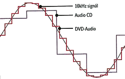
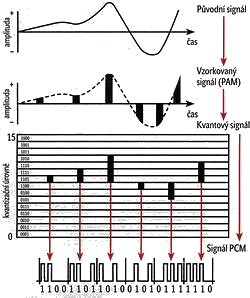
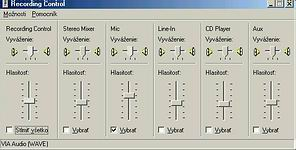

Zvuk je pozdå�ne mechanické vlnenie s istou vlnovou då�kou a teda odpovedajúcou frekvenciou, s istou farbou
a intenzitou (hlasitos�ou). Zvuk sa šíri len v prostredí vyplnenom atómami alebo molekulami látok. Rıchlos� šírenia vo vzduchu závisí od
teploty a tlaku ale pribli�ne je asi 330 m/s. Vo vode sa šíri asi 4x rıchlejšie. Ka�dé chvenie hmotného telesa v hmotnom prostredí vedie ku
vzniku zvuku (nie ka�dı zvuk ale musí by� ¾udskım uchom zachytitelnı). Vıška tónu je daná jeho frekvenciou.
Vyvolajme v prostredí nejakı zvuk - napríklad tón. Sledujme pohyb nejakej malej vzorky tohoto hmotného prostredia a vıchylku zapíšme
na os y na os x dáme èas. V prípade èistého (jedného) tónu nám vznikne krivka sinusoida. V praxi sa s úplne èistım tónom nestretneme (ka�dı zvuk je vlastne
zmes tónov rôznych frekvencií a hlasitostí)a sínusovka
bude ma� drobné odchılky od svojho ideálu spôsobené ïalšími frekvenciami, ktoré vytvárajú farbu tónu. (inak znie komorné a na klavíri a inak na trúbke).
¼udské ucho vie zachyti� a rozpozna� zvuky frekvencií <20Hz, 20kHz> . Tento rozsah sa udáva z dávnejšej histórie, keï sluch èloveka nebol tak
namáhanı a atakovanı rôznymi "nepriatelskımi" vymo�enos�ami ako sú walkmany, koncerty pop hudby, diskotéky, autá, zbíjaèky a pod. Tie� nie všetky frekvencie
sú rovnako intenzívne spracovávané. Najlepšia citlivos� je na zvuky <1000Hz, 5000Hz>.

Poèítaèe však vedia spracováva� len digitálne informácie. Analógovı signál sa pred spracovaním v poèítaèi musí kódova� - digitalizova�.
Zabezpeèuje to A/D - analógovo - digitálny prevodník. Táto zmena samozrejme pôvodnı signál skreslí - ide o to aby toto skreslenie
nemalo pre ¾udskı sluch vıznamnos�. Najrozšírenejšia forma kódovania je pulzná kódová modulácia - PCM.
Ne� sa z analógového signálu stane PCM zvuk, musí najprv prejs� vzorkovaním, kvantovaním a kódovaním.
Vzorkovanie
Vzorkovaè zaznamenáva aktuálne hodnoty (vıchylky) analógového signálu v pravidelnıch intervaloch s istou frekvenciou
napr. pri frekvencii 10kHz sa zaznamená hodnota signálu 10 000 krát za sekundu. Vzniká signál PAM - pulzná amplitúdová modulácia.
Vzorkovacia frekvencia (Sampling rate)
Aby sa dal vzorkovanı signál PAM pri reprodukcii plne zrekonštruova�, musí by� splnené tzv.
"Nyquistovo kritérium" : frekvencia, ktorou sa vzorkovanie prevádza, musí by� aspoò 2-krát vyššia ako frekvencia pôvodného signálu.
Ak je poèute¾nı zvuk od 20Hz - 20kHz, tak vzorkovacia frekvencia musí by� aspoò 40kHz. V praxi sa vzorkuje s 10% navıšením, preto sa pou�íva
vzorkovacia frekvencia 44,1kHz. Všeobecne mo�no poveda�, �e èím väèšia vzorkovacia frekvencia tım je lepšie zachytená farba tónov a naopak zni�ovaním
vzorkovacej frekvencie prvá odchádza farba zvuku a ïalším zni�ovaním sa zni�ujú vyššie frekvencie (zvuk plechatie)
Kvantovanie

Kvantovaním sa namerané hodnoty "zaokrúh¾ujú" na najbli�šiu úroveò amplitúdy ka�dej vzoky , preto má digitálny signál na rozdiel od analógového
schodovitı priebeh.
Kódovanie
Pri kódovaní zvuku hudobného CD sa pou�íva 16 bitové kódovanie - t.z �e ka�dú vzorku zakódujeme 16 - ticou jednotiek a núl - všetkıch
mo�nıch napä�ovıch úrovní signálu teda mô�e by� 216=65536 (hovor v telefóne je kódovanı 8 bitmi - rozlišuje 256 napä�ovıh úrovní).
V prípade stereofónneho signálu sa pou�ívajú 2 kanály a vıstupom sú 2 prúdy digitálnych hodnôt. Pre porovnanie uvádzame nasledujúcu tabu¾ku:
| Kvalita digitálneho záznamu | vzorkovacia frekvencia | rozlišenie, kanály |
| Telefóna kvalita | 11 025Hz | 8 bit - mono |
| Rozhlasová kvalita | 22 050Hz | 8 bit - mono |
| CD kvalita | 44 100Hz | 16 bit - stereo |
| DVD kvalita | 192 000Hz | 24 bit - 5.1 surround sound |
ÚLOHA: Vypoèítajte då�ku zvukovej nahrávky (5+1 kanálovı zvuk), ktorá na DVD zaberá 64MB a je nahraná v DVD kvalite.
 Èo k tomu potrebujeme:
Èo k tomu potrebujeme:
Samotnému nahrávaniu predchádza trochu experimentovania - nastavenie citlivosti mikrofónu. Urobíme to cez program nastavenie hlasitosti
(dva krát zaklopeme na ikonku reproduktora na hlavnom paneli vpravo dole alebo nájdeme tento program cez Start v èasti Zábava.)
Zvolíme z menu Vlastnosti èas� nahrávanie a nastavíme na mikrofóne hlasitos�.
Pre vytvorenie jednoduchého záznamu zvuku mô�me pou�i� program, ktorı je súèas�ou príslušenstva OS
Windows. Umo�òuje záznam dlhı a� 1 minútu, ktorı mô�eme ulo�i� vo formáte wav - Windows PCM zvuk (pozri digitalizácia
zvuku). Program ponúka aj jednoduché efekty, ako je zrıchlenie, èi spomalenie záznamu, vlo�enie ozveny a zaujímavé spätné prehrávanie.
Nároènejší u�ívatelia mô�u siahnu� po programe audacity, ktorı je free a poskytuje oproti win klasike bohatšie mo�nosti

Aplikácia obsahuje tri panely: ovládací, editaènı a panel mixéru.
Ktorıko¾vek z panelov mô�eme necha� "pláva�" (zapíname to napr. v menu Zobrazenie).
Editaènı panel umo�òuje kopírova�, vystrihova�, vklada� vıber resp. ticho; neobmedzenı krok spä� (Undo),
zväèšenie resp. zmenšenie náh¾adu stopy.
Panel nástrojov obsahuje ovládacie prvky na nahrávanie- prehrávanie zvuku a nieko¾ko špeciálnych nástrojov.
Opakované prehrávanie dosiahneme stlaèením klávesy Shift+ ikony Play. Ostatné nástroje umo�nia vybra� èas nahrávky,
èasovı posuv (teda aj synchronizáciu) súboru, lupa, obálka na ¾ubovo¾nú úpravu hlasitosti nahrávky a napokon (v ríši hudby nezvyèajnı)
nástroj kreslenie, ktorım pri dostatoènom zväèšení stopy mô�eme upravi� drobné prasknutia a iné rušivé zvuky v nahrávke. Kreslením takto dokonèíme
prácu filtra na odstránenie praskania.
Panel mixéru umo�òuje nastavi� hlasitos� vstupu a vıstupu zvuku. V dolnej èasti programu si vyberieme vzorkovaciu frekvenciu. Je z èoho
:-) (a� 96 kHz alebo vlastná...). Je tam tie� riadok so zobrazením informácií o prvku, ktorı je momentálne pod kurzorom myši. Nad ním sa
nachádza samotné okno so zvukovımi stopami, v ¾avej èasti sú panely pre jednotlivé stopy. Ich menu vyvoláme kliknutím na tlaèidlo so šípkou.
Mô�eme si v òom vybra� meno stopy, jej presun, spôsob zobrazenia, vzorkovaciu frekvenciu, rozdelenie (spojenie) stereo stopy atï. Najmä
treba upozorni� na mo�nos� programu pracova� s formátom vzorkovania 32-bitov float (na Audio CD je to iba 16 bitov !), èo síce znaène zväèší
vıslednı súbor, no kvalita záznamu bude lepšia. Stopu mo�no tieš umlèa�, resp. zvırazni�, alebo zmeni� vyvá�enie príslušnımi tlaèidlami.
Audacity vie importova� formáty midi, mp3, ogg,wav, aiff, raw, IRCAM, Sun Au/NeXT. Má aj vlastnı formát pre ukladanie projektov aup (AUdacity Project format), èo je vıhodné vtedy, ak pracujeme na väèšom projekte a nechceme ho neustále konvertova� na mp3. Ak sme ku programu nahrali aj po�adovanı kompresor MP3 doká�e exportova� súbory do formátu MP3, štandartne robí export do Wav. Platí: mp3 je za�a�enı patentom, preto kompresor napr. lame) nie je súèas�ou Audacity, ale musíme si ho stiahnu� zvláš�. Prevod skladby na formát mp3, alebo ogg spôsobí zní�enie kvality skladieb, je to stratová kompresia.
| Queen | We are the Champions | Bohemian Rapsody | Radio GaGa |
|---|---|---|---|
| Abba | Honey Honeys | Gimme Gimmy | Fernando |
| Eminem | My name is | Slimshady | |